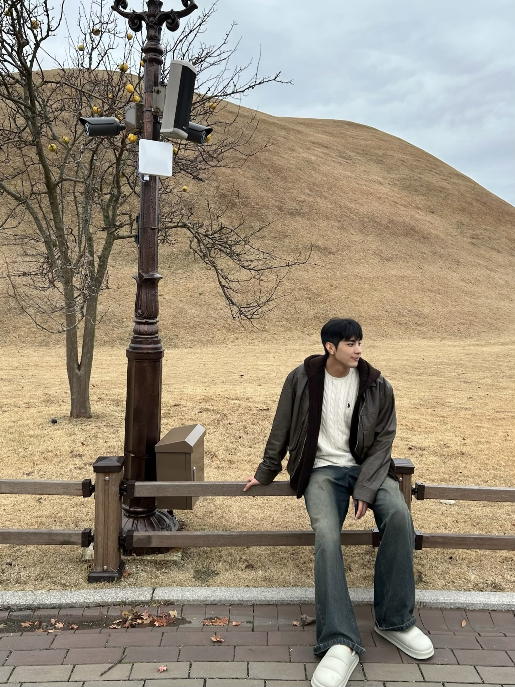

Featured
OTT-Vid: Optimal Transport Temporal Token Compression for Video Large Language Models
Under Review at NeurIPS 2026
An optimal transport based temporal token compression method for efficient video large language models.
Scene Understanding · Video Temporal Grounding
Vision-Language Multimodal Learning
Integrated M.S./Ph.D. Student in Electrical and Electronic Engineering at Yonsei University, working on computer vision and machine/deep learning for video.
My research centers on scene understanding and vision-language multimodal learning, including video temporal grounding, video scene graph generation, and video large language models. I am interested in building models that reason about motion, long-range temporal structure, and language for real-world video understanding.

About
I am an Integrated M.S./Ph.D. student in Electrical and Electronic Engineering at Yonsei University, in the Image and Video Pattern Recognition Lab (MVP Lab), advised by Prof. Sangyoun Lee. I received my B.S. in Electrical and Electronic Engineering from Korea University.
My research lies in computer vision and machine/deep learning, with a focus on scene understanding, video temporal grounding, and video scene graph generation, as well as vision-language multimodal learning for video large language models.
I am interested in models that can understand dynamic visual content, reason about motion and long-range temporal structure, and connect vision with language for robust real-world video understanding.
News
First-author paper "OTT-Vid" under review at NeurIPS 2026.
First-author paper "PAWS" under review at ECCV 2026.
Two co-authored papers accepted to CVPR Findings 2026.
Co-authored paper on zero-shot anomaly detection accepted to Pattern Recognition.
3rd place in Task 3 (Temporal Action & Sound Localization), hosted by DeepMind at the ICCV 2025 Workshop.
First-author paper "DualGround" accepted to NeurIPS 2025.
Co-authored paper "CMTM" accepted to ICIP 2025.
Publications
Under Review at NeurIPS 2026
An optimal transport based temporal token compression method for efficient video large language models.
Under Review at ECCV 2026
A pair affinity learning approach for weakly-supervised video scene graph generation.
NeurIPS 2025
A structured framework for phrase- and sentence-level temporal grounding in video.
CVPR Findings 2026
CVPR Findings 2026
Pattern Recognition 2026
ICIP 2025
npj 2D Materials and Applications, 2022
Research
Building models that parse complex visual scenes, reason about objects and their relations, and capture structured semantics in video.
Topics: Video Scene Graph Generation, Structured Reasoning
Localizing moments and actions in video given natural language, with a focus on phrase- and sentence-level temporal grounding.
Topics: Temporal Grounding, Moment Retrieval, Action Localization
Connecting vision and language to improve understanding and reasoning over dynamic visual content.
Topics: Video Large Language Models, Cross-Modal Learning
Designing token compression and efficient architectures that make large-scale video models practical for real-world deployment.
Topics: Token Compression, Optimal Transport, Efficient Modeling
Developing recognition systems that remain reliable under low-visibility, adverse weather, and multi-sensor conditions.
Topics: Multi-Sensor Fusion, Robust Detection, Domain Generalization
Studying motion-guided and cross-modal methods for segmenting salient objects in video, including unsupervised settings.
Topics: Unsupervised VOS, Motion Cues, Cross-Modal Modulation
Contact
I am always happy to discuss research and collaboration.
please feel free to get in touch.